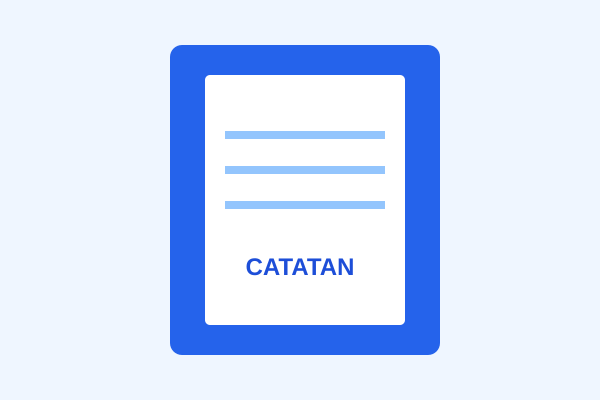
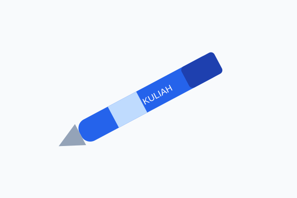
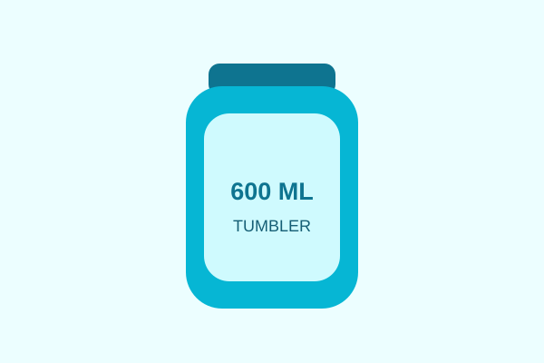
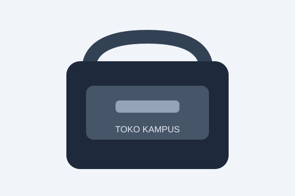

Buku Catatan
Rp15.000
Buku untuk mencatat materi kuliah.
Lihat DetailPerlengkapan kuliah untuk kebutuhan sehari-hari
Pilih perlengkapan yang sesuai dengan kebutuhan kuliahmu.

Rp15.000
Buku untuk mencatat materi kuliah.
Lihat Detail
Rp5.000
Pulpen untuk menulis tugas dan catatan.
Lihat Detail
Rp35.000
Botol minum untuk dibawa ke kampus.
Lihat Detail
Rp120.000
Tas untuk menyimpan buku dan alat tulis.
Lihat DetailUkuran A5 dengan 80 lembar. Menggunakan kertas 70 gsm yang nyaman untuk menulis materi kuliah.
Pulpen tinta hitam dengan ujung 0,5 mm dan desain ringan sehingga nyaman digunakan untuk mencatat.
Kapasitas 600 ml dengan bahan stainless steel dan tutup rapat untuk membantu mencegah kebocoran.
Tas berukuran 15 inci dengan bahan polyester, beberapa kompartemen, dan ruang khusus laptop.
Toko Kampus
Email: toko@example.com